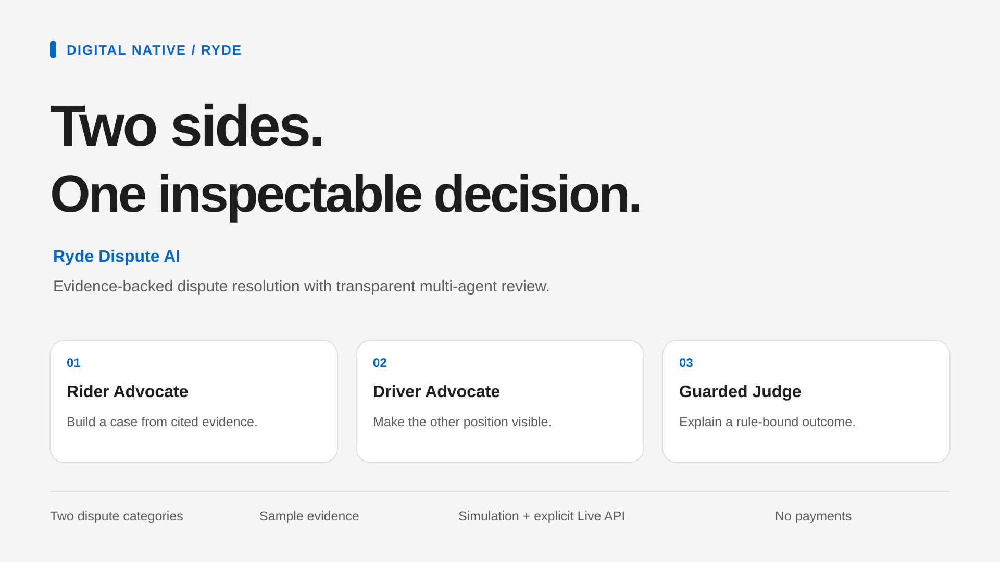
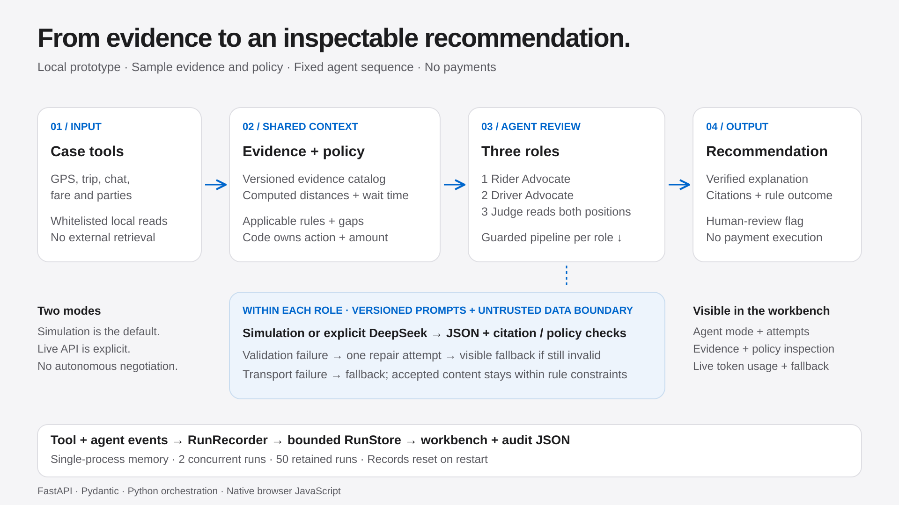

Copy with clear boundaries.
English project name, seven-word introduction, description and fields still needing verified details.
Read the form copy
Review both accounts, inspect supplied evidence, and keep unresolved facts open. The UI offers four baseline cases and three clearly labelled synthetic consent variants. It starts in Simulation mode; this is not an official Ryde release.
Start the local service first. The local address is not a public demo URL.
English project name, seven-word introduction, description and fields still needing verified details.
Read the form copyShow uncertain consent, clearly labelled synthetic comparisons, no-show outcomes and visible fallback.
Read the demo scriptRun three auxiliary review tasks, keep their actual outputs, and document what was used.
Open the task promptsThree roles use a fixed sequence. Code constrains actions and amounts, including an undetermined amount when a decisive consent fact remains unresolved.
